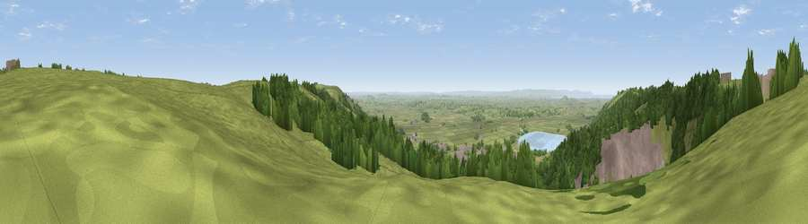

Viewpoint near Cheddar
#2533 in England · top 2% of its area beats it · near CheddarThe view, rendered

A 360° render of this exact spot computed from the terrain model, tree cover and land cover — summer colours, afternoon light, calibrated against photographs of famous viewpoints. Real trees, hedges and buildings will differ in detail.
The panorama
Grey silhouette: terrain skyline in each direction (720 bearings, Earth curvature and refraction included). Dashed green: skyline with trees (+15 m) and buildings (+8 m) as obstacles. Blue strip: how far the ground is visible on each bearing.
Where the view opens
Wedge length = distance to the farthest visible ground on that bearing (vegetation-aware). Rings at 10, 25 and 50 km.
What fills the view
43% grassland · 31% woodland · 22% built-up · 2% water · 1% cropland ·
Angular shares of the visible panorama (visual magnitude), not map area. Landscape diversity 0.53 (0–1 Shannon).
Key numbers
More beautiful places nearby
The staircase of upgrades: each row has a higher view potential than everything closer. Driving times are estimates from straight-line distance, calibrated against real road routing — check an actual route before setting out.
| Place | Direction | Drive | Score |
|---|---|---|---|
| Beacon Batch | NE · 3 km | ~7 min | 79.4 |
| Bleadon Hill [Loxton Hill] | W · 10 km | ~20 min | 79.6 |
| Viewpoint near Holford | WSW · 34 km | ~52 min | 80.8 |
| Viewpoint near Holford | WSW · 34 km | ~52 min | 82.2 |
| Viewpoint near Holford | WSW · 35 km | ~54 min | 85.9 |
| Viewpoint near West Quantoxhead | WSW · 36 km | ~55 min | 87.9 |
| Viewpoint near West Quantoxhead | WSW · 37 km | ~56 min | 88.7 |
| The Knoll | S · 68 km | ~91 min | 91.0 |
51.29183, -2.76827 · source: screening · position refined by local search. Computed location — check access rights before visiting.